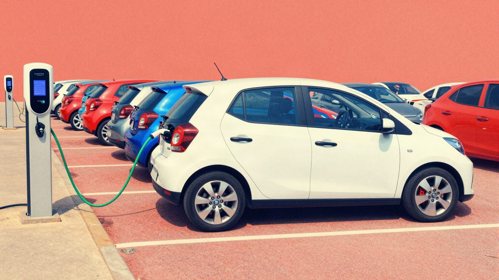
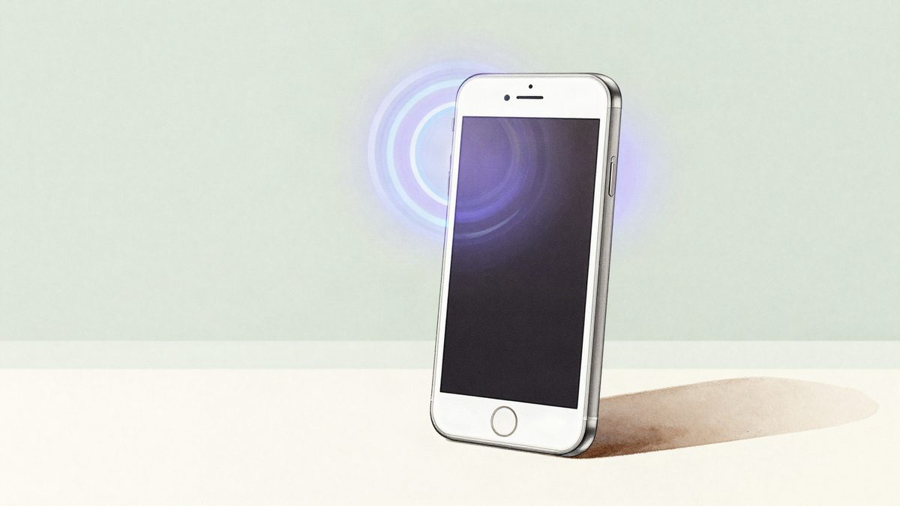
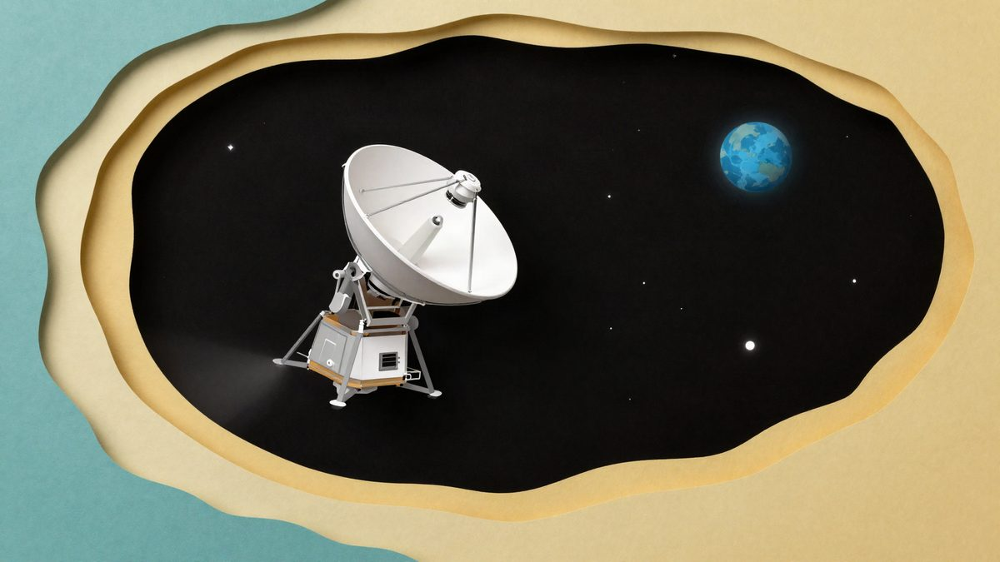

Fond je zaprimio oko 17.600 prijava za EV poticaje u sat vremena, natječaj se privremeno zatvara u podne

Fond za zaštitu okoliša i energetsku učinkovitost otvorio je u 9 sati natječaj za poticaje za nova energetski učinkovita vozila, a nakon sat vremena stiglo je oko 17.600 prijava. Javni poziv privremeno se zatvara u 12:00, a Fond još nije objavio kada će prijave biti obrađene. Građani mogu dobiti do 9.000 eura poticaja.
Fond za zaštitu okoliša i energetsku učinkovitost jutros je u 9 sati otvorio natječaj za sufinanciranje kupnje novih energetski učinkovitih vozila, koji je dvaput bio odgođen. Nakon sat vremena stiglo je oko 17.600 prijava, pa se javni poziv privremeno zatvara u 12:00.
Prijave se primaju po načelu "najbržeg prsta", pa je presudan bio redoslijed predaje. Fond još nije objavio kada će prijave biti obrađene ni kada će se znati rezultati.
Broj prijava nije broj kupaca
Iz Fonda ističu da broj prijava, prema informacijama s tržišta, ne mora odgovarati stvarnom broju kupaca. Konačno odobrenje ovisit će o cjelovitosti dokumentacije i ozbiljnosti ponuda, a prijave koje to ne zadovolje neće proći.
Zastoji na portalu
Prema informacijama iz prve ruke, odmah nakon 9 sati navala na stranice eFZOEU, preko kojih su se prijave predavale digitalno, izazvala je zastoje. Sporo su radili upload dokumentacije, povlačenje OIB-a iz baze i sama predaja prijave. Unutar prve minute prijavu su uspjeli predati samo najbrži i oni kojima sustav nije zastajkivao.
Iznosi poticaja
Fond je za program prvotno osigurao 20 milijuna eura. Ponovno je naveo da će, ovisno o interesu i rezultatima obrade prijava, osigurati i dodatna sredstva. Građani mogu dobiti poticaj do 9.000 eura, ovisno o kategoriji i vrijednosti vozila.
Izvor: Bug.hr
Povezani članci
 Asobuview: procurilo 15,8 milijuna zapisa o članovima preko dobavljača mail usluge Arala4. studenoga 2026.
Asobuview: procurilo 15,8 milijuna zapisa o članovima preko dobavljača mail usluge Arala4. studenoga 2026.
Siri se otvara aplikacijama trećih strana: iOS 27.3 donosi podršku za sve aplikacije3. studenoga 2026.
Voyager 1 stiže na jedan svjetlosni dan od Zemlje: signal do sonde putuje 24 sata12. studenoga 2026.